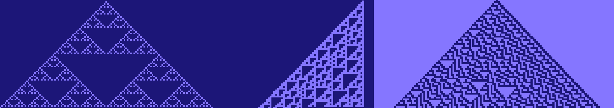
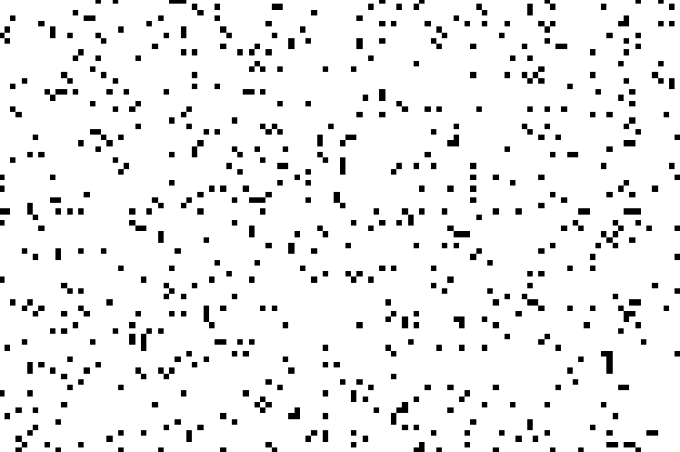
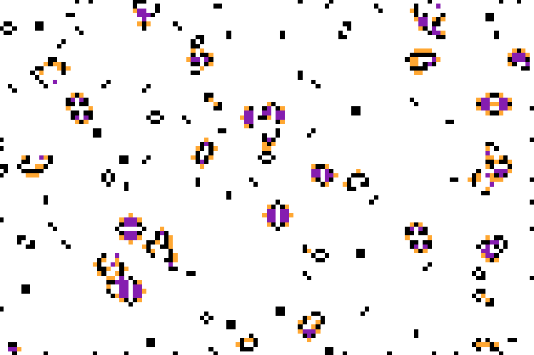

Creating a Cellular Automata Animator in Java
While studying Java and object-oriented design, my teacher shared an interesting topic with me called Cellular Automata (CA). These are systems made up by a collection of elements, or cells. Each cell can exist in a set number of states ({0, 1}, {off, on}, etc). With an initial state created, all of the cells in a CA will then change over time based on simple rules, which use the states of a cell's neighbors as inputs. Systems that could grow and change themselves based on simple rules interested me, and some of the patterns these systems could create were very neat. For this reason I decided to create a program in Java that could animate the changes of CA systems. There were two main systems I animated: the first is based on Stephen Wolfram's CA rules. The second is based on a paper that was published in Scientific American in the 70's by the mathematician John Conway. Conway's Game of Life is a game that uses a 2-D CA to show how cells in a table change over time.
1-D Cellular Automata Rules
The simplest form of a CA we can make is 1-D, where cells are stored in an array. For the CA to change over time, cells need to change based on the states of their neighbors. The simplest neighborhood we can define for any cell in this array is of length 3, which includes: {a cell's left neighbor, the cell itself, and a cell's right neighbor}. Because each neighborhood is of length 3, and each cell in a neighborhood can have the state 0 or 1, this means that for any given neighborhood, there are 2^3 = 8 possible configurations of states (e.g., {0, 0, 0}, {0, 0, 1}, {0, 1, 1}, etc...).
For this reason, to change the CA over time, we need to specify what to do if any one of these 8 configurations occurs. This can be done by converting the state's binary representation to an integer. For example, {0, 0, 0} converts to 0, {0, 0, 1} to 1, ... up to {1, 1, 1} to 7. Because the states will always convert to an integer between 0 - 7 (inclusive), we can make the rule an array of length 8 (indexed at 0), and then use the neighborhood's configuration to get an index for the cells next change. For example {0, 0, 0, 0, 0, 0, 0, 0} would turn every cell in the next generation to a 0, because any index returns the value 0, and {1, 1, 1, 1, 1, 1, 1, 1} would make any configuration result in a 1. Interestingly, even for this simple configuration of neighborhoods of 3, because the rule array itself is of length 8, there are 2^8 = 256 possible rules for changing the CA! For my project, I let the user input a rule as an integer between 0 - 255, which is then converted to binary to create the rule array.
Displaying how the CA rules can change over time is done in the following way. First, we create a starting state where every cell is 0, except for one cell in the middle of the array that is 1. We display this row to the screen, giving every 0 cell a certain color, and every 1 cell a different color. Then, we loop over all cells and calculate what the state in the next iteration should be based on the current rule. Then, the prior display is shifted up by a pixel's height, and the new state is displayed below it. This process repeats until we're bored. Below are some examples of cool patterns that can be generated by different rules:

2-D Game of Life
For the 2-D CA, we handle the rules a bit differently. For any cell in a 2-D matrix, the neighborhood includes the 3x3 grid around the cell, with the cell at its center. If a neighborhood of 3 resulted in 8 combinations and 256 possible rules, you can imagine how many combinations / rules would result from a neighborhood of 9 cells. For this reason, Conway's game uses simpler rules. The number of active neighbors in a neighborhood are counted, and then different choices can be made for the next state: (e.g., if only 1 cell is alive, it is too lonely and will die, if exactly 3 cells are alive, then give birth to a new cell, if >= 6 are alive, a cell may die from being too croweded, else do nothing). To start the game of life, we create a 2-D matrix of numbers, and use a random number generator to set them to 0 or 1:

Then, we can loop over every cell, calculate the next state for its neighborhood of 9, and update that to the next state. Once all cells are calculated, the changed state can be updated to the display. Here's an example of what the game board looks like after running for a couple of seconds. (Note: purple indicates the death of a cell, and orange indicates the birth of a new cell).

Final Thoughts
This was a fun project to get more fluent with Java and object-oriented design. I find the patterns that can be created very interesting, and want to work on more computer generated art projects. For any who are interested in the topic, Thomas Lin Pederson has created some cool artwork using the R language.
For any who want to see more of the code, this was designed using the Model, View, Controller (MVC) pattern, which made separating the data and GUI display elements much easier. The full project can be found on my GitHub.